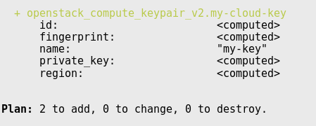

Terraform
Contributors
Questions
What is Terraform?
In which situations is it good/bad?
How to use it for managing your VM cluster
Objectives
Learn Terraform basics
Launch a VM with Terraform
Launch and tear down a cluster with Terraform
Why Terraform
-
Managing complex infrastructure is not easy
-
Needs to be reproducible
-
Needs to be failure resistant
Pets vs Cattle
.pull-left[
- A special, lovingly raised server
- When they become ill you nurse them back to health
- Everyone is sad when it dies ]
.pull-right[
- Generic and replacable
- If one gets sick, you just kill it
- If one dies, no one is sad ]
Terraform
“Infrastructure as Code”
- Write code
- Plan changes
- Create reproducible infrastructure
Write: Infrastructure as Code
-
Your infrastructure is completely specified by easy-to-edit text files
-
Collaborate on infrastructure using git/hg/etc.
-
Automate everything using one piece of software (instead of OpenStack CLI + AWS CLI + … )
resource "openstack_compute_instance_v2" "my-server" {
name = "my-server"
image_name = "CentOS 7"
flavor_name = "m1.large"
}
resource "aws_route53_record" "my.server" {
name = "my.server.example.org"
records = ["${openstack_compute_instance_v2.my-server.access_ip_v4}"]
}
Plan: your changes
-
See how changes will affect resources
-
Preview the planned changes before applying them

Speaker Notes
Easy to see which resources need to be recreated, can produce a nice graph of their dependencies.
Create: Reproducible Infrastructure
-
Combine resources across providers (VM from OpenStack, DNS from Amazon, everything done in correct order)
-
Consistently reproduce the same infrastructure in a new cloud, new project.
.image-70[
 ]
]
Speaker Notes
This was a fantastically useful feature for UseGalaxy.eu, we transitioned smoothly between two OpenStack clouds because we just could say terraform apply in our new cloud, our entire infrastructure was reproduced.
Manage Many Resources
ACME Alicloud Archive Arukas AWS Azure Azure Stack Bitbucket
Brightbox CenturyLinkCloud Chef Circonus Cloudflare CloudScale.ch
CloudStack Cobbler Consul Datadog DigitalOcean DNS DNSMadeEasy
DNSimple Docker Dyn External F5 BIG-IP Fastly FlexibleEngine GitHub
Gitlab Google Cloud Grafana Helm Heroku Hetzner Cloud HTTP
HuaweiCloud Icinga2 Ignition InfluxDB Kubernetes Librato Linode
Local Logentries LogicMonitor Mailgun MySQL Netlify New Relic
Nomad NS1 Null Nutanix 1&1 OpenStack OpenTelekomCloud
OpsGenie Oracle Cloud Infrastructure Oracle Cloud Platform Oracle Public
Cloud OVH Packet PagerDuty Palo Alto Networks PostgreSQL PowerDNS
ProfitBricks RabbitMQ Rancher Random RightScale Rundeck RunScope
Scaleway SoftLayer StatusCake Spotinst TelefonicaOpenCloud Template
TencentCloud Terraform Terraform Enterprise TLS Triton UltraDNS
Vault VMware vCloud Director VMware NSX-T VMware vSphere
Speaker Notes
Manage VMs across AWS, GCE, OpenStack, and other Clouds
Manage DNS entries with various providers
Manage Database users/tables/authorizations
Manage GitHub repository permissions
Advanced Features
If you find you love it, many advanced features:
- modules for code re-use
- Custom plugins
- Provisioning VMs
- GitHub integration
Key Points
- Terraform lets you develop and implement infrastructure-as-code within your organisation
- It can drastically simplify management of large numbers of VMs
Thank you!
This material is the result of a collaborative work. Thanks to the Galaxy Training Network and all the contributors! Tutorial Content is licensed under
Creative Commons Attribution 4.0 International License.
Tutorial Content is licensed under
Creative Commons Attribution 4.0 International License.